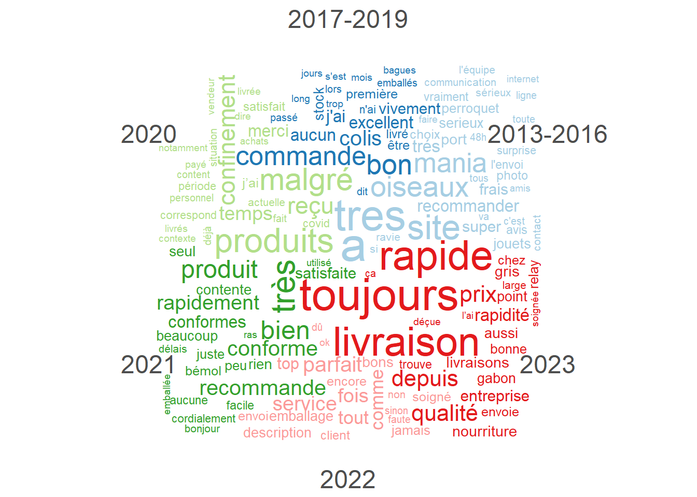

knitr::opts_chunk$set(
echo = TRUE,
message = FALSE,
warning = FALSE)
library(readxl)
library(tidyverse)
library(quanteda)
library(quanteda.textstats)
library(quanteda.textplots)
library(RColorBrewer)
display.brewer.all()3 Analyse du sentiment
3.1 Les données
data <- read_csv("data/data_trustpilot_oiseaux.csv")3.2 Sentiment analysis
On va réaliser une analyse du sentiment du corpus. Pour cela, on utilise le dictionnaire des sentiments et émotions NRC, car il est disponible dans 40 langues, dont le français. Il existe d’autres dictionnaires de sentiments (positif vs négatif), par exemple AFINN ou BING, ainsi que des dictionnaires thématiques (LIWC par exemple), mais ils sont en anglais ou payants, donc utilisables pour des corpus en anglais ou lorsqu’on dispose d’un budget. Les dernières évolutions du traitement en langage naturel des IA (transformers et autres, dont ChatGPT est un exemple), permettent d’autres approches très pertinentes, en utilisant le machine learning, mais cela va au-delà des objectifs de ce cours.
Ici, on utilise le dictionnaire NRC à travers le package syuzhet. La fonction get_nrc_sentiment prend en entrée un vecteur de type caractère.
library(syuzhet)
# d<-get_nrc_sentiment(data$comments, language = "french")
# write_rds(d, "sentiment_trustpilot_oiseaux.rds")
d<-read_rds("data/sentiment_trustpilot_oiseaux.rds")
summary(d, digits=1) anger anticipation disgust fear joy
Min. :0.0 Min. : 0.0 Min. :0.0 Min. :0.0 Min. :0.0
1st Qu.:0.0 1st Qu.: 0.0 1st Qu.:0.0 1st Qu.:0.0 1st Qu.:0.0
Median :0.0 Median : 1.0 Median :0.0 Median :0.0 Median :0.0
Mean :0.1 Mean : 0.9 Mean :0.1 Mean :0.1 Mean :0.6
3rd Qu.:0.0 3rd Qu.: 1.0 3rd Qu.:0.0 3rd Qu.:0.0 3rd Qu.:1.0
Max. :7.0 Max. :10.0 Max. :7.0 Max. :6.0 Max. :6.0
sadness surprise trust negative positive
Min. :0.0 Min. :0.0 Min. :0.0 Min. : 0.0 Min. : 0
1st Qu.:0.0 1st Qu.:0.0 1st Qu.:0.0 1st Qu.: 0.0 1st Qu.: 1
Median :0.0 Median :1.0 Median :1.0 Median : 0.0 Median : 2
Mean :0.2 Mean :0.7 Mean :0.9 Mean : 0.4 Mean : 2
3rd Qu.:0.0 3rd Qu.:1.0 3rd Qu.:1.0 3rd Qu.: 0.0 3rd Qu.: 3
Max. :7.0 Max. :5.0 Max. :8.0 Max. :12.0 Max. :14 data<-cbind(data,d)
data[600,8:17] anger anticipation disgust fear joy sadness surprise trust negative
600 0 1 0 1 1 0 1 1 0
positive
600 1data[600,"comments"][1] "Commande reçu dans les temps pas de surprise. Très bon site"Le dictionnaire comprend 10 variables, 8 émotions et 2 sentiments. Pour représenter les données, nous avons besoin de les transformer.
e<-d%>%
pivot_longer(everything(),names_to = "sentiment", values_to = "nb")
ggplot(e, aes(sentiment, nb))+
geom_col(aes(fill=sentiment),show.legend = FALSE)+
theme_minimal()+
coord_flip()3.2.1 Les sentiments
Intéressons-nous d’abord aux sentiments :
sent<-d%>%
select(positive,negative)%>%
pivot_longer(everything(), names_to = "sentiment", values_to = "nb")%>%
summarise(nb=sum(nb), .by = sentiment)%>%
mutate(prop=nb/sum(nb))
ggplot(data=sent, aes(x=sentiment, y=prop)) +
geom_bar(stat="identity", aes(fill=sentiment), show.legend = FALSE)+
scale_y_continuous(labels=scales::percent) +
labs(title = "Répartition des sentiments dans le corpus Oiseaux Mania",caption = "Données TrustPilot",x="Sentiments",y=NULL)+
scale_fill_manual(values=c("red", "lightgreen"))+
theme_light()Le corpus est très largement positif, ce qui n’est pas étonnant. On peut aussi créer d’autres indicateurs, comme la valence (différence positif-négatif) ou l’expressivité (somme de positif+négatif).
Exercice : personnalisez le graphique ci-dessous pour la variable d’expressivité.
data<-data%>%
mutate(nbcar=nchar(comments),
valence = positive-negative)
ggplot(data = data, aes(x = valence, y= nbcar))+
geom_point()+
geom_smooth()+
labs(title="Indicateur de valence", subtitle = "en fonction du nombre de caractères", caption="Données TrustPilot")+
theme_minimal()Solution :
Solution
data<-data%>%
mutate(nbcar=nchar(comments),
expressivité = positive+negative)
ggplot(data = data, aes(x = expressivité, y= nbcar))+
geom_point()+
geom_smooth()+
labs(title="Indicateur d'expressivité", subtitle = "en fonction du nombre de caractères", caption="Données TrustPilot")+
theme_minimal()3.2.2 Les émotions
Regardons maintenant ce qu’il en est de la répartition des émotions :
#On crée d'abord une palette pour les émotions
emocol<-c("yellow","chartreuse","olivedrab3","green4","royalblue3","purple3","red3","orangered1")
emo<-d%>%
select(-positive, -negative)%>% #On récupère les émotions
pivot_longer(everything(), names_to = "emotion", values_to = "nb")#On transforme le tableau
emo2<-emo%>%
summarise(nb=sum(nb), .by = emotion)%>%
mutate(prop=nb/sum(nb),
emotion=factor(emotion, ordered = TRUE,levels = c("joy","trust","fear","surprise","sadness","disgust","anger","anticipation")))
#On crée un graphique circulaire
ggplot(data=emo2, aes(x=emotion, y=prop, colour=emotion)) +
geom_bar(stat="identity", aes(fill=emotion), show.legend = FALSE)+
scale_y_continuous(labels=scales::percent)+
labs(title="Distribution des émotions \n dans le corpus Oiseaux Mania", caption="Données TrustPilot", x="Emotions", y=NULL) +
coord_polar()+
scale_color_manual(values=emocol)+ scale_fill_manual(values=emocol)+
theme_minimal()#On regarde la répartition des émotions dans le corpus :
ggplot(emo, aes(x=emotion, y=nb))+
geom_violin(aes(fill=emotion), alpha=0.7,adjust = 2)+
theme_minimal()+ scale_fill_manual(values=emocol)+
scale_x_discrete(labels=NULL)ggplot(emo, aes(x=emotion, y=nb))+
geom_boxplot(aes(fill=emotion,), alpha=0.7,adjust = 2, show.legend = FALSE)+
theme_minimal()+ scale_fill_manual(values=emocol)3.3 Évolution du corpus dans le temps
On va regarder comment les sentiments évoluent dans le temps. On doit tout d’abord créer une variable temporel dans notre jeu de données. Nous en avons déjà une, qui indique la date et l’heure à laquelle le commentaire a été posté. Nous allons la transformer pour regrouper les commentaires en fonction de l’année (on peut le faire pour les jours, les mois, les minutes, …).
data%>%group_by(year)%>%summarise('nb com'=n())# A tibble: 11 × 2
year `nb com`
<dbl> <int>
1 2013 125
2 2014 209
3 2015 249
4 2016 171
5 2017 324
6 2018 341
7 2019 375
8 2020 735
9 2021 853
10 2022 623
11 2023 383Regardons maintenant comment évolue les sentiments dans le temps :
#les émotions
##mise en forme des données
gen_sent<-data%>%
mutate(year=as.factor(year))%>%
group_by(year)%>%
summarise(across(7:14,~mean(.x, na.rm = T)))%>%
na.exclude()%>%
pivot_longer(-year, names_to = "emotion", values_to = "mean")%>%
mutate(emotion=factor(emotion, ordered = TRUE,levels = c("joy","trust","fear","surprise","sadness","disgust","anger","anticipation")))
##graphique
ggplot(gen_sent,aes(x=year, y=mean,group=emotion)) +
geom_line(aes(color=emotion), linewidth=0.5) +
theme_minimal()+
scale_color_manual(values = emocol)#les sentiments
##mise en forme des données
gen_sent2<-data%>%
mutate(year=as.factor(year))%>%
group_by(year)%>%
summarise(across(c(positive, negative),~mean(.x, na.rm = T)))%>%
na.exclude()%>%
pivot_longer(-year, names_to = "sentiment",values_to = "mean")
##graphique
ggplot(gen_sent2,aes(x=year, y=mean,group=sentiment)) +
geom_line(aes(color=sentiment), linewidth=0.5) +
theme_minimal()+
scale_color_manual(values = c("red","lightgreen"))Maintenant, on va s’intéresser aux mots.
3.4 Nuage de mots comparés
3.4.1 En fonction des années
On refait les manipulations préliminaires :
data<-data%>%
mutate(year2=case_when(year<2017~"2013-2016",
year %in% c(2017:2019)~"2017-2019",
.default=as.character(year)))
corpus_oiseaux<-corpus(data, text_field = "comments")
tok<-tokens(corpus_oiseaux, remove_punct = TRUE, remove_numbers = TRUE, remove_symbols = TRUE)%>%
tokens_remove(stopwords("fr"))
dfm<-dfm(tok)Comparons les mots en fonction des années :
dfmgp<-dfm_group(dfm, groups = year2)
dfmgpDocument-feature matrix of: 6 documents, 5,392 features (66.69% sparse) and 1 docvar.
features
docs comme toujours super service changez rien sauf peut être là
2013-2016 38 26 93 58 0 71 6 17 9 8
2017-2019 32 61 74 78 0 76 5 13 24 4
2020 27 38 42 65 0 51 0 5 6 1
2021 35 49 49 64 2 62 8 11 11 2
2022 36 49 46 59 0 36 0 4 3 3
2023 16 51 22 27 2 21 3 6 3 4
[ reached max_nfeat ... 5,382 more features ]#On peut aussi passer la fonction directement en transformant en dfm avec l'option groups : dfm(tok, groups="year")
textplot_wordcloud(dfmgp, comparison=TRUE, max_words = 200)
3.4.2 En fonction des sentiments
Pour comparer en fonction des sentiments, il faut accéder au dictionnaire NRC (en français) (il y a des fonctions simplifiées pour les dictionnaires en anglais) :
dic_nrc<-read_xlsx("NRCfr.xlsx")%>%
pivot_longer(-word,names_to = "sentiment", values_to="value")%>%
filter(value==1, word!="NO TRANSLATION")%>%
select(-value)
sent_term<-convert(dfm,to="data.frame")%>%
select(-doc_id)%>%
pivot_longer(everything(), names_to="word", values_to="value")%>%
filter(value!=0)%>%
summarise(value=sum(value), .by=word)%>%
inner_join(dic_nrc)%>%
slice_max(n=10, by=sentiment, order_by = value, with_ties=F)
ggplot(sent_term, aes(reorder(word, value), value, fill = sentiment)) +
geom_col(show.legend = FALSE) +
facet_wrap(~sentiment, scales = "free_y") +
labs(y = "Contribution to sentiment",
x = NULL) +
coord_flip()+
theme_minimal()